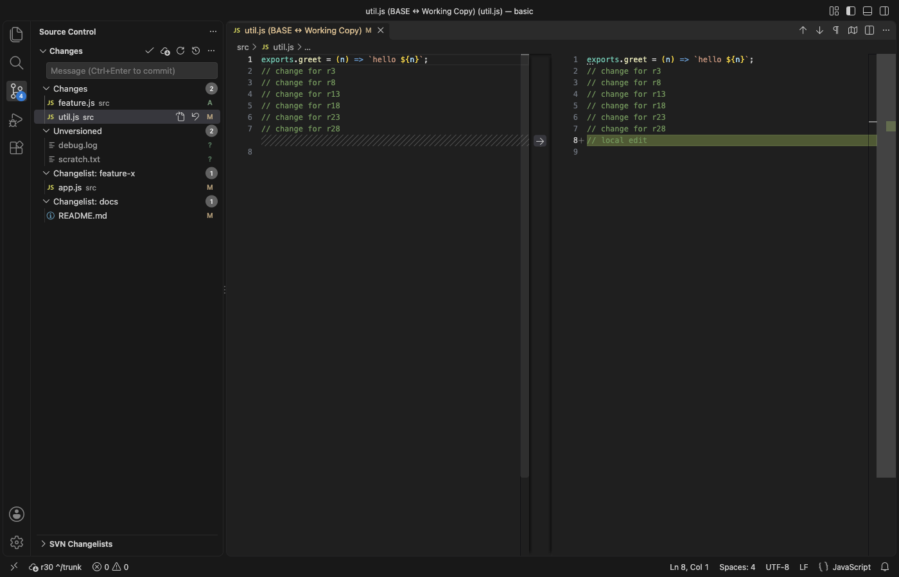

Open files in VS Code and Cursor / Developer files
Use SVN (Subversion) in VS Code and Cursor
SVN Client & Subversion Source Control puts an svn working copy in the Source Control view, where git changes show. Commit, update, revert, diff against BASE, the log, blame, branches, merge, the revision graph and shelving are free. It runs the svn command line you already have (1.7 or later), so it works with any Subversion server you can reach today. Zovo Pro (USD 19 once) adds release notes from the log, the log as a CSV and a code ownership report, with 3 free tries each.
Free, MIT license. Extension ID zovo.zovo-svn-client, version 0.2.1. Needs VS Code 1.90.0 or newer.

Steps in VS Code
- Install SVN Client from the Marketplace, or press Ctrl+P (Cmd+P on macOS) and run
ext install zovo.zovo-svn-client. - Check that the svn command line works with
svn --versionin a terminal. If it is missing, run "SVN: Install the svn Command Line..." for the install command for your system (Homebrew, apt, dnf, TortoiseSVN command line tools or SlikSVN). - Open a folder checked out with svn, or run "SVN: Checkout..." with a repository URL. Changes, Unversioned, Conflicts and each changelist get their own group in the Source Control view.
- Click a changed file to compare it with BASE. Type a message and press Ctrl+Enter (Cmd+Enter on macOS) to commit, or use Commit Selected Files or Commit Changelist.
- Run "SVN: Show Log (History)" for the history with filters for text, author and date, or "Show File History" for one file. Tick two revisions and press Compare.
- Run "SVN: Toggle Blame" to see the revision, author and date before every line. Hover a line for its commit message.
Where Zovo Pro saves time
Status, commit, diff, update, revert, log, blame, switch, branches, tags, merge with a dry run, the revision graph, shelving and the changelist manager are free, with no ads and no account.
Before a release, Release Notes from the Log turns the commits since the newest tag, of the last 30 days, the last 50, or a range you type into Markdown. Each line has the revision, author and date, plus the issue ids found in the messages, such as #41 or PROJ-12, then the authors and the most changed paths. The other Pro tools export the log to CSV for Excel and build a code ownership report from svn blame.
With Release Notes from the Log (Zovo Pro)
- Run "SVN: Release Notes from the Log (Zovo Pro)" from the Command Palette, or from the … menu of the SVN view.
- Pick the range. It can start at the newest tag, cover the last 30 days or the last 50 commits, or use revisions you type.
- The Markdown opens in a tab. A try counts only when the report opens or the file is saved.
Release Notes from the Log works 3 times on your computer before it asks for a license, and a try counts only when you get a result. Opening a file shows no popup and no countdown.
Zovo Pro costs USD 19 once. It is not a subscription, and it turns on the Pro tools in every Zovo extension, not only SVN Client. After a card payment (Stripe) your license key shows on the next page. In VS Code, run "Zovo Pro: Enter Zovo Pro license key" from the Command Palette and paste it. The key is checked on your computer, with no network call. With GitHub Sponsors, pick the "$19 one time" tier, then run "Zovo Pro: I already paid: unlock with GitHub Sponsors" and sign in with the same GitHub account. With PayPal, send USD 19 with "Zovo Pro" in the note and the key comes by email within a day.
A team of 5: USD 59 once, by card or by PayPal. Every rule and every Pro tool is on the Zovo Pro page.
Steps in Cursor, Windsurf or VSCodium
- Open the Extensions view with Ctrl+Shift+X (Cmd+Shift+X on macOS).
- Search for
zovo.zovo-svn-clientand click Install. Cursor, Windsurf and VSCodium install from Open VSX, where it is published aszovo/zovo-svn-client. - If your editor has no gallery, download the .vsix from the Open VSX page and run "Extensions: Install from VSIX...".
- Then use it the same way as in VS Code.
What SVN Client handles
- Text, property and tree conflicts, with Resolve (mine, theirs or base).
- Changelists, each with its own group and Commit button.
- Nested working copies and externals, each with its own entry.
- Working copies of 100,000 files, with one svn status at a time.
What it does not do
- It needs svn 1.7 or later on your computer and does not bundle svn.
svn relocate,svn importandsvn exportare not in it yet. Run them in a terminal.- The diff view shows file text only. Use
svn difffor property diffs. - It stores no passwords. If the server asks for a login, run
svn infoonce in a terminal so svn caches it. - Tested on macOS. Windows and Linux paths are covered by unit tests only.
Other options
- TortoiseSVN. A free svn client for Windows, used from the right-click menu of File Explorer. Windows only.
- The svn command line. Free and complete. Run
svn status,svn diffandsvn commitin a terminal, with no gutter marks or diff editor. - SVN by johnstoncode. The most installed SVN extension for VS Code. A Marketplace review reports that it could not find svn after TortoiseSVN was installed.
Install counts and Open VSX status were checked on 12 November 2026. Descriptions in quotes are the extensions' own.
Questions
Does it work with my svn server?
Yes, if your svn command line can reach it. The extension runs svn and sends nothing else over the network.
Does it slow down big working copies?
Only one svn status runs per working copy at a time, and build folders such as node_modules, build and dist start none (setting zovoSvn.exclude).
Is the revision graph paid?
No. The revision graph, shelving and the changelist manager are free.
Does it work in Cursor or Windsurf?
Yes. Cursor, Windsurf and VSCodium install extensions from Open VSX. Search for the extension in their Extensions view and install it there.
More about SVN Client
Read the SVN Client page for every feature and setting, or the source code on GitHub.
Related guides
- Read a HAR file offline in VS Code
- Read your Claude Code history in VS Code
- Compare two folders in VS Code
- TTF to WOFF2 in VS Code
Zovo Pro and support
Zovo Pro: USD 19 once, every Zovo viewer. It turns on the Pro tools in this extension and in the other Zovo extensions you use. The free features stay free.
After a card payment your license key shows on the next page. Paste it with the command "Zovo Pro: Enter a key".
You can also support the work with no Pro:
Need your format supported?
Open a format request with a sample file, and I reply there whether it can be done. For USD 299 once, through this GitHub Sponsors tier, I add your file format or a missing feature to this extension, with tests, within 7 days.